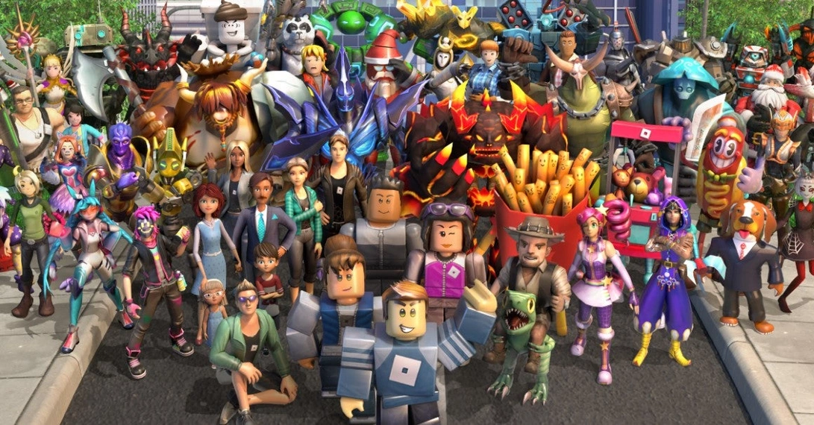
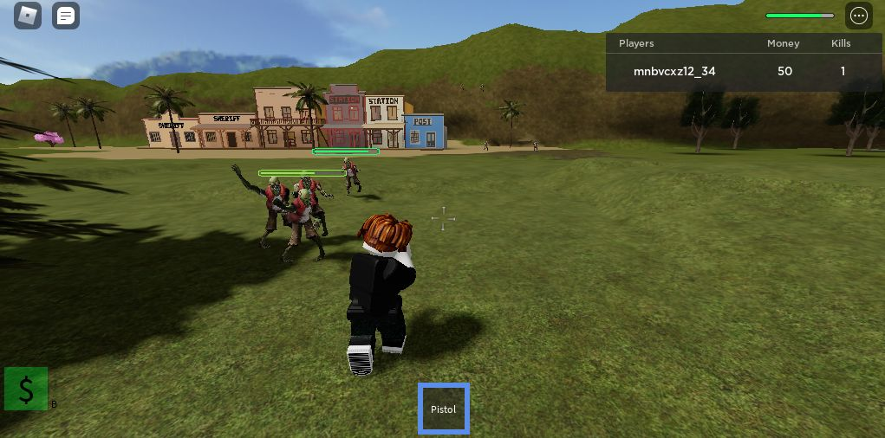
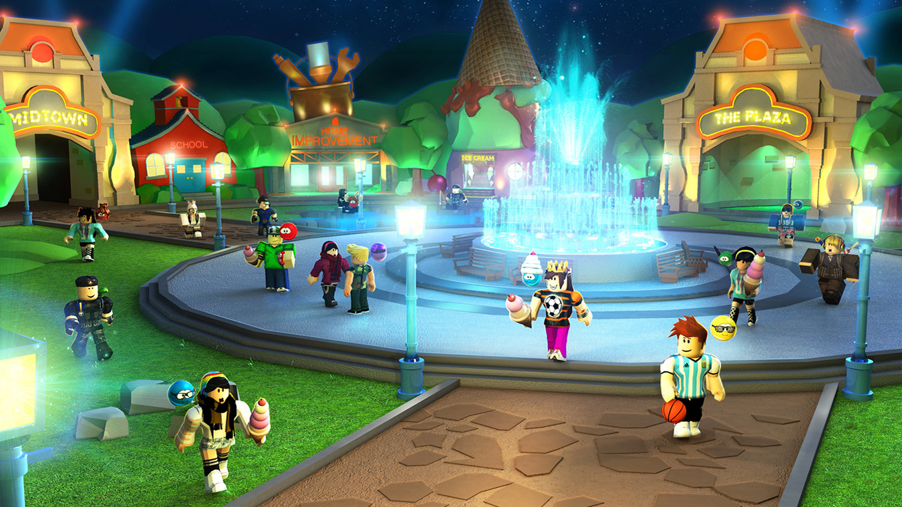
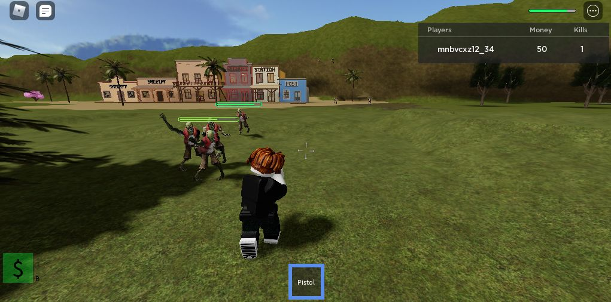
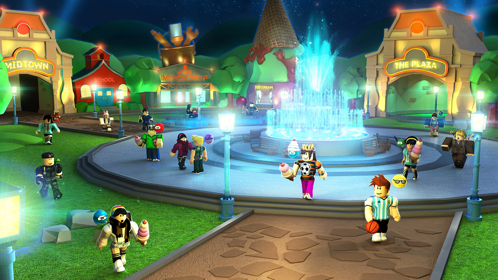

Roblox
Roblox — безплатна онлайн-платформа для створення ігор. Користувачі можуть створювати власні ігри в Roblox Studio, грати в ігри, створені іншими користувачами, а також створювати та вигадувати одяг для свого персонажа. Деякі товари в каталозі можна купити за ігрову валюту — Robux.
Roblox створили 2004 року американці Девід Башуцкі та Ерік Кассел. Спочатку, розглядалась назва GoBlocks, потім DynaBlocks проте проєкт був випущений під назвою Roblox, придуманою Девідом.
Скріншоти з гри
 


